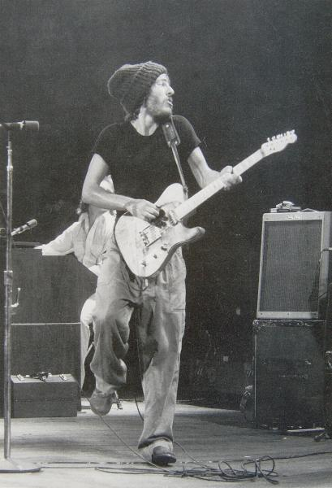

| Michael Putland/Retna | ||
| Back 03/21 |
 | Next 05/21 |
Bruce Springsteen - woolly hat, thin arms and baggy trousers much in evidence - plays the Hammersmith Odeon in 1975, on the occasion of his generously-hyped first visit to Britain. "Finally", announced the sign outside, "London is ready for Bruce Springsteen." |